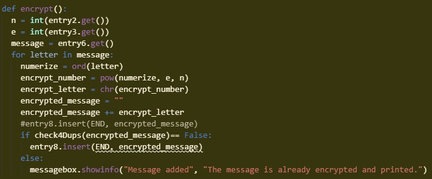
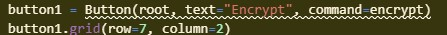

The purpose of my program is to take inputs of any public key and intended message and to output an encrypted message. It also takes in a private key and encrypted message that can be decrypted. The functionality in the video demonstrates input information for the public key and a message, showing that the program outputs an encrypted message. It also shows the decryption of a message with a private key and encrypted message, returning the decrypted message. The input of the program consisted of the key information for both the public and private, as well as the input of the encrypted and decrypted messages. The output was encrypted and decrypted messages using the key information.
The procedure in the photo virtually takes in 2 input values, the values for the public key, and a message that is intended to be encrypted. It contributes to the functionality of the program because it makes up a half of the program, which is to encrypt and decrypt messages. The algorithm consists of getting the information input into the 3 entry boxes, each being set to a certain variable to help simplify the procedure. The 3 pieces of input information, the 2 key variables and the message, are all used to help encrypt the message, putting the encrypted message into numbers and converting these numbers into the encrypted message through the use of “pow” and the “chr” functions. This happens for every letter in the message and it lastly combines each set of numbers that represents each letter into one output message.
|  |  |
|---|